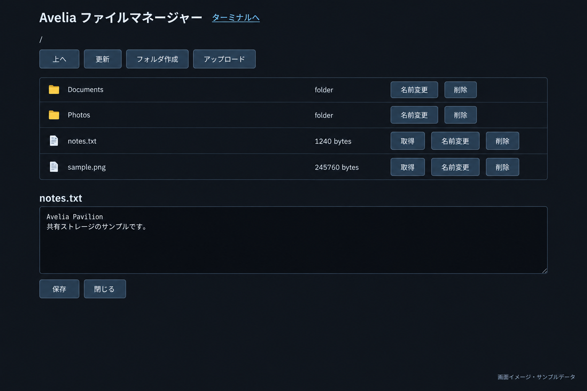

ファイルを整理する
フォルダの作成、アップロード、ダウンロード、名前変更。共有領域の日常的な操作をブラウザーで。
Avelia Pavilionは、ファイル管理とWebターミナルをひとつにまとめた管理環境。このサイトでは、機能を拡張するパッチと、適用に必要な情報を公開しています。

共有領域を操作するWebAdmin。アヴェリア本体は別途必要で、用途に合わせて本体変更なし版も選べます。
フォルダの作成、アップロード、ダウンロード、名前変更。共有領域の日常的な操作をブラウザーで。
UTF-8テキストを開いて、その場で編集・保存。小さな設定メモや共有文書の更新に使えます。
画像のプレビューやディレクトリ別の保護を追加。導入済みWebAdminを対象に、必要な機能を選びます。
管理画面からPDFをブラウザー内蔵ビューアで表示。画像・ディレクトリ保護との併用構成にも対応します。
内容とダウンロード →PNG・JPEG・GIF・WebPを管理画面で表示。拡大・縮小・等倍の操作に対応します。
内容とダウンロード →WebAdmin内のフォルダにパスワードを設定。親フォルダの保護を子フォルダにも適用します。
内容とダウンロード →ここでは追加パッチを配布しています。パッチの利用には、対象となるWebAdmin・共有ストレージの導入が必要です。製品本体のZIPはこのリポジトリに含みません。製品についてはBOOTHの商品ページをご覧ください。
ブラウザーから共有領域を操作する仕組みです。SMB/NFS共有サーバーの導入機能は含みません。
ここで公開している3種はWebAdmin側を変更するパッチです。Avelia.pyやpack/write_file.pyは変更しません。